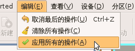

Gparted 分区编辑器基础
作者：TeliuTe 来源：基础教程网
五、格式化分区 返回目录 下一课使用分区编辑器还可以对分区进行管理，例如格式化分区，操作注意细心，下面我们来看一个练习，
注意：格式化会清除分区上原有的数据，请确认要进行格式化操作；
1、格式化分区
1）点菜单“系统－系统管理－分区编辑器”打开 Gparted 窗口；
2）找到要改变大小的分区，如果显示有钥匙，则点右键先卸载该分区；
3）选中该分区，瞄准点右键，在出来的菜单中选“格式化为－reiserfs”；
4）格式化的作用是对新建分区进行处理，相当于建立许多的房间来存放物品，一般有FAT格式、NTFS格式、EXT格式等，根据需要来选择；
在 Windows 系统中一般用 NTFS 格式，早先的系统用 FAT 格式，在 Linux 系统里一般用 EXT 格式，各有优点；
5）接下来显示有一个操作挂起，点菜单“编辑－应用所有的操作”，出来一个提示，这儿是练习，点“取消”；

6）如果点“应用”，会出来一个执行格式化的面板，稍等完成操作；
7）返回到窗口中，列表中分区的文件系统已经改变，容量不变，关闭窗口退出；
本教程由86团学校TeliuTe制作|著作权所有
基础教程网：http://teliute.org/
美丽的校园……
转载和引用本站内容，请保留作者和本站链接。